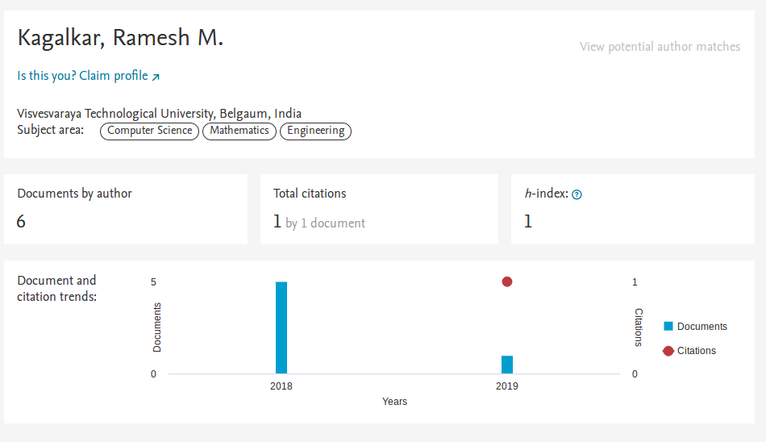
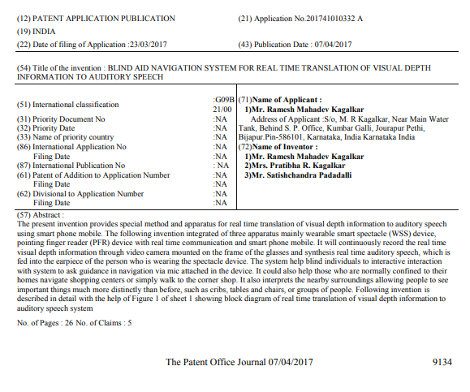
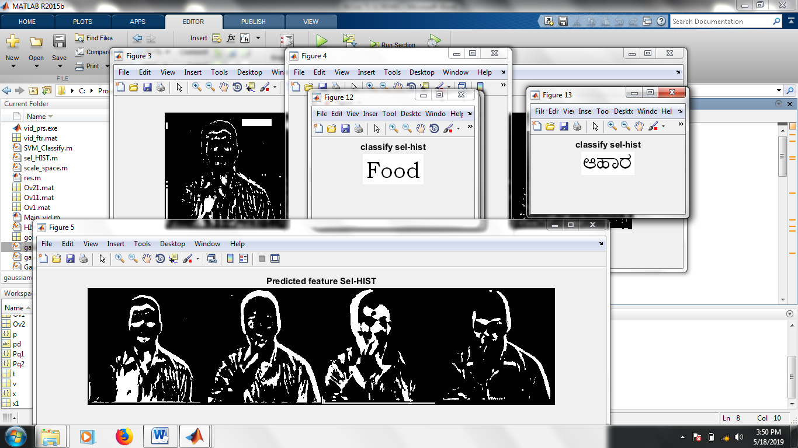

Dr. Ramesh M. Kagalkar
Professor and R&D Cell Coordinator
PhD(CIS), M.Tech(CSE), BE(CSE), LMISTE, MCSI
KLE College
of Engineering and Technology, Chikodi
Dist. Belagavi,
Karnataka, India E-mail:rameshvtu10@gmail.com
About Me
Dr.Ramesh M. Kagalkar received his BE degree in Computer
Science and Engineering from Gulbarga University in 2001 and M.Tech
from Visvesvaraya Technological University, Belagavi in 2006. He has
received Ph.D. degree in Computer and Information Sciences from
Visvesvaraya Technological University, Belagavi in Jun-2019. He is
having 16.5 years of teaching experience in the field of computer
science and engineering. Currently he is working as a Associate
Professor in the department of Computer Science and Engineering and
also handling the charge of Research and Development Coordinator,
KLE College of Engineering and Technology, Chikodi, Dist. Belagavi,
Karnataka, India. He has filled and published 2 innovative idea and
design in Indian patent journal and also 4 innovative ideas and
design are in process. He has published more than 40 research papers
in various international journals (indexed in SCI, Scopus and DBLP).
He is an author of 3 text books which are available online in
Amazon.com. He has presented several his research papers in various
national and international conferences. He has guided more than 15
Master of Engineering Dissertations in the field of Image
Processing, Audio and Video processing, Gesture Recognization and
NLP etc. He has guided more than 20 Under graduate students in the
field of Audio & Video processing, IoT and Cloud computing. His
research includes Image Processing, Audio & Video processing and
Gesture Recognization.
Text book 1
Text book 2
Text book 3
Text book 4
Google Scholar Profile
https://scholar.google.co.in/citations?user=PFz2cIgAAAAJ&hl=en

Scopus Profile
https://www.scopus.com/authid/detail.uri?authorId=57202894623

DBLP Profile
https://dblp.org/pers/hd/k/Kagalkar:Ramesh_Mahadev
IEEE Explore Profile
https://ieeexplore.ieee.org/search/searchresult.jsp?queryText=kagalkar&highlight=true&returnFacets=ALL&returnType=SEARCH&searchWithin=ramesh%20
LinkedIn Profile
https://www.linkedin.com/in/ramesh-kagalkar-76477518b
Academia Profile
https://independent.academia.edu/RameshKagalkar
Research Gate Profile
https://www.researchgate.net/profile/Ramesh_Kagalkar
Qualification
- PhD in Computer and Information Sciences and Engineering,
from, Computer and Information Sciences from Visvesvaraya
Technological University, Belagavi, Karnataka and awarded on Jun-
2019.
- M.Tech in Computer Science and Engineering, from
Visvesvaraya Technological University, Belagavi, Karnataka in
July-2006.
- BE in Computer Science and Engineering from PDA College of
Engineering, Gulbarga, Karnataka, Feb-2001.
Experience
- More than 18.5 Years of Teaching experience.
- Currently working as Professor in KLE College
of Engineering and Technology, Chikodi, Dist.Belagavi, Karnataka.
- Handling charge of R & D Cell Coordinator in the
institution.
- Worked as a "PG-Coordinator, Department of Computer
Engineering, Dr. D Y Patil School of Engineering and Technology,
Loheagon, Pune.
Subjects of Interests
- Advanced Computer Architecture
- Operating System
- Real Time System
- Embedded Computing system
- System Software and Compiler Design
- Audio & Video Processing
- Data Structures
- Artificial Intelligence
Technical Skills
- Operating Systems: Windows 7, Ubuntu Linux
- Languages: C, C++, Matlab, Python.
Patents published
| Sl No |
Name of the applicant |
Title of work |
Issuing authority |
Filed reference number |
Published |
Examination and Grant |
| 1 |
Dr.Ramesh M.Kagalkar |
An Automated System for Providing Effective Communication
Between Speech , Hearing Impaired and Visually Challenged
Individuals. |
Govt. of India, Controller General of Patent Design Trade
marks Department of Industry Policy and Promotion. International
patent filled. |
671/KOLNP/2011A |
10/01/2012 |
Under process |
| 2 |
Dr.Ramesh M.Kagalkar |
Blind Aid Navigation System for Real Time Translation of
Visual Depth Information to Auditory Speech. |
Govt. of India, Controller General of Patent Design Trade
marks Department of Industry Policy and Promotion. |
201741010332 |
07/04/2017 |
Under process |
| 3 |
Dr.Ramesh M.Kagalkar |
Vocally Impaired Individual Aid System For Real Time Sign
Action to Speech Synthesis. |
Govt. of India, Controller General of Patent Design Trade
marks Department of Industry Policy and Promotion. |
201841031411A |
31/08/2018 |
Under process |
| 4 |
Dr.Ramesh M.Kagalkar |
Real time Services System for Human Emergency Situation. |
Govt. of India, Controller General of Patent Design Trade
marks Department of Industry Policy and Promotion. |
Filing under process |
Filing under process |
Filing under process |
| 5 |
Dr.Ramesh M.Kagalkar |
Real Time Emergency Service and Instant Penalty for the
Accident. |
Govt. of India, Controller General of Patent Design Trade
marks Department of Industry Policy and Promotion. |
Filing under process |
Filing under process |
Filing under process |
| 6 |
Dr.Ramesh M.Kagalkar |
Real Time Retrieval of Personal and Medical History
Information During Emergency Situation. |
Govt. of India, Controller General of Patent Design Trade
marks Department of Industry Policy and Promotion. |
Filing under process |
Filing under process |
Filing under process |
| 7 |
Dr.Ramesh M.Kagalkar |
Automatic Intelligent Talking Refrigerator Using Internet
of Things. |
Govt. of India, Controller General of Patent Design Trade
marks Department of Industry Policy and Promotion. |
Filing under process |
Filing under process |
Filing under process |
1. Patent Idea: Blind Aid Navigation System for Real Time
Translation of Visual Depth Information to Auditory Speech.


More
details available on below link
2. Patent Idea: Vocally Impaired Individual Aid System For
Real Time Sign Action to Speech Synthesis.
For
More Information Page No. 32702
3. An Automated System for Providing Effective
Communication Between Speech , Hearing Impaired and Visually
Challenged Individuals.
Patent news
Weekly Patent News: Interesting Inventions
https://www.bananaip.com/ip-news-center/weekly-patent-news-interesting-inventions-wrong-statistics-by-indian-patent-office-huawei-fined-10-5-million-dollars-uspto-offers-refunds-and-more/

JOURNALS
2018-19 (June-2018 to May-2019)
| 1. Paper published entitled on, “Support Vector Machine
Based Approach for Text Description from the Video”, International
Journal of Computational Vision and Robotics, Inderscience
Publishers, Scopus-Elsevier indexed, 2018, Volume 8, No.26,
pp.613–622.Link is here
|
| 2. Paper published entitled on, “Curvilinear Tracing
Approach for Recognition of Kannada Sign Language”, International
Journal of Computer Applications in Technology, Volume No.59,
No.01,2019 Inderscience Publishers Scopus-Elsevier indexed. |
2017-18 (June-2017 to May-2018)
| 1.Paper published entitled on, “Mobile Application Based
Translation of Sign Language to Text Description in Kannada
Language”, International Journal of Interactive Mobile
Technologies (iJIM), Volume N0.12.No.02, 2018 Scopus and DBLP
indexed |
2016-17 (June-2016 to May-2017)
| 1. Paper published entitled on, “Euclidean Distance Based
Classifier for Recognition and Generating Kannada Text Description
from Live Sign Language Video”, International Journal of Recent
Contributions from Engineering, Science & IT (DBLP indexed
Journal), Volume 5, Issue No.3, pp.32-42, 2017. |
| 2. Paper published entitled on, “Curvilinear Tracing
Approach for Extracting Kannada Word Sign Symbol from Sign Video”,
International Journal of Image, Graphics and Signal Processing,
Volume 9, pp.18-27, Published Online September 2017 in MECS
(http://www.mecs-press.org/) DOI: 10.5815/ijigsp.2017.09.03. |
| 3. Paper published entitled on, “ANFIS Based Methodology
for Sign Language Recognition and Translating to Number in Kannada
Language”, International Journal of Recent Contributions from
Engineering, Science & IT (DBLP indexed Journal), Volume 5, Issue
No. 1, pp. 54-66, 2017. |
2015-16 (June-2015 to May-2016)
| 1.Paper published entitled on, “Gradient Based Key Frame
Extraction for Continuous Indian Sign Language Gesture Recognition
and Sentence Formation in Kannada Language: A Comparative Study of
Classifiers”, International Journal of Computer Sciences and
Engineering, Volume 4, Issue 9, 2016. |
| 2. Paper published entitled on, “Sign Language Video
Processing for Text Detection in Hindi Language”, International
Journal of Recent Contributions from Engineering, Science & IT
(DBLP indexed Journal), Volume 4, Issue No. 3, pp. 22-27, 2016. |
| 3. Paper published entitled on, “Methodology for Sign
Language Video Analysis into Text in Hindi Language”, CiiT
International Journal of Fuzzy Systems, Volume 8, No 5, 2016. |
2014-15 (June-2014 to May-2015)
| 1. Paper published entitled on, “New Methodology for
Translation of Static Sign Symbol to Words in Kannada Language”,
International Journal of Computer Applications, Volume 121, pp.
26-30, July -2015. |
PAPERS TO BE COMMUNICATED TO INTERNATIONAL JOURNALS
| 1. Paper communicated entitled on, “Spectral Mapping
Approach for Auditory Mapping and Generating Audible Speech Signal
from Sign Language Video”, International Journal-Information
Technology Research, IGI Global Publication, Scopus indexed (Paper
is submitted in Sep-2017 under review). |
| 2. Paper communicated entitled on, ”Methodology for Sign
Video Analysis and Translate Equivalent Text Description in
Kannada Language”, Assistive Technology, The official Journal of
Resna, Taylor and Francis online, SCI and Scopus indexed (Paper is
submitted in Oct-2017 under review). |
| 3. Paper communicated entitled on, “Methodology for
Kannada Language Text Description and Speech Synthesis from Sign
Language Video”, Sadhana, Academy Proceedings in Engineering
Sciences, , (SCI and Scopus indexed ) Indian Academy of Sciences
with Springer publication. (Paper is submitted in Oct-2017 and
waiting for reviewer status). |
| 4. Paper Communicated entitled on, “Spectral Correlative
Coding Approach for Word Recognition in Kannada Sign Language”,
Sadhana, Academy Proceedings in Engineering Sciences, Indian
Academy of Sciences with Springer publication, (SCI and Scopus
indexed )) Indian Academy of Sciences with Springer publication
(Paper is submitted in Aug-2017 and waiting for reviewer status). |
CONFERENCES
International Conferences:
2016-17 (June-2016 to May-2017)
| 1. Paper presented and published, entitled on“Curvilinear
Tracing for Kannada Cue Sign Recognition”, IEEE International
Conference on Innovations in Information, Embedded and
Communication Systems (ICIIECS) in Association with IEEE Madras
section, Volume 5, pp. 320-324, Coimbatore, Tamil Nadu, 2017. 2017
(Paper isavailable in IEEE Xplorer Digital library). |
| 2. Paper presented and published, entitled on,
“Methodology for Real Time Hand Gesture Recognition and Generating
Text Description Using Histogram Techniques” IEEE International
Conference on Intelligent Computing and Control (I2C2) in
Association with IEEE Madras section, Volume 1, pp. 68-74,
Coimbatore, Tamil Nadu, 2017 (Paper is available in IEEE Xplorer
Digital library) |
| 3. Paper presented and published, entitled on,
“Interactive Retrieval of Spoken Content Optimized by LDA
Algorithm” IEEE International Conference on Intelligent Computing
and Control (I2C2) in Association with IEEE Madras section, Volume
1, pp. 68-74, Coimbatore, Tamil Nadu, 2017 (Paper is available in
IEEE Xplorer Digital library) |
| 4. Paper presented and published, entitled on, “Efficient
Approach for Complex Video description into English Text” IEEE
International Conference on Intelligent Computing and Control
(I2C2) in Association with IEEE Madras section, Volume 1, pp.
68-74, Coimbatore, Tamil Nadu, 2017 (Paper is available in IEEE
Xplorer Digital library) |
2015.16 (June-2015 to May-2016)
| 1. Paper presented and published, entitled on, “A
Methodology for Sign Language Video Translation into Textual
Version”, cPGCON-2016, Fifth Post Graduate Conference of. Computer
Engineering, Pimpri Chinchwad College of Engineering, Pune. |
| 2. Paper presented and published, entitled on“Novel
Approach of Sign Language Video Translation into its Equivalent
Text Description in Kannada Language”, Springer International
Conference on Intelligent Computing and Applications (ICICA
2016) , organized by D. Y. Patil College of Engineering, Akurdi,
Pune-44. |
2014-15 (June-2014 to May-2015)
| 1. Paper presented and published, entitled on, “Sign
Language Recognition System for Deaf Sign User”, c-PGCON-2015,
Fourth Post Graduate Conference for Computer Engineering students
at MET’s Bhujbal Knowledge City, Nashik held on 13th and 14th
March 2015. |
| 2. Paper presented and published, entitled on“A Neural
Network Based Classification and Recognition of Cue Symbol and
Translating into Text Description in Kannada Language”.
International Conference on Emerging Research In Electronics,
Computer Science and Technology, (ICERECT-2015), IEEE-Bangalore
section Chapter, April 2015, PES College of Engineering Manday,
Karnataka, India. |
2010-11 (June-2010 to May-2011)
| 1. Paper presented and published, entitled on, “Neural
Network Based Document Image Analysis for Text Image Localization
Using Wavelet Decomposition and Mathematical Morphology”
International Conference on Recent Trends in Soft Computing and
Information Technology (RTSCIT09) Bhopal, M.P, INDIA Volume no -1,
page no 110-119, Jan, 09-10, 2010. |
| 2. Paper presented and published, entitled on,
“Methodology for Content Based Image Searching and Retrieval from
Fish Database Using Knowledge Base Classifier”, International
Conference on Intelligent Information System and Management
(IISM’2010),Coimbatore, Tamilanadu, India June 10-12, 2010. |
| 3. Paper presented and published, entitled on,
”Methodology for Texture Analysis Approach on a Wavelet Transform
to Retrieve Image Using Knowledge Base Classifier“ International
Conference on Computing, Communication and Networking Technologies
(ICCCNT10 ) Karur, 2010 Tamilanadu, India. |
National Conferences:
| 1.Using Feed Back Mechanism Under the Case Study of Fish
Object” International Conference on ENC2SP-IEEE Bangalore Section,
Bangalore, India, Volume 1, p.no 8-9, 29th Aug 2009. |
BOOKS
1. Book: titled “Advanced Computer Architecture”, An Easy
Approach to the Concepts of Computer Architecture publication:
Subhas stores, Bangalore for B.E VIIIth sem and M.Tech IInd sem
students of VTU, Feb-2011, Belgaum, Karnataka, India.
Web link
2. Book: titled “A Novel Approach for Privacy Preserving”
publication”: Lambert Academic Publishing, ISBN: 978-3-659-76868-2
(Available in online), Aug-2015, Germany.
Weblink
3. Book: titled “The Swift Practical Approach of Learning
C-Programming” Publication: Lambert Academic Publishing, ISBN:
978-3-659-94465-9 (Available in online), Oct-2016, Germany.
Web
Link
Text book considered as a Best reference book (Amazon online
survey) of top universities, institution and colleges. Below is the
link where Serial No. 5 is the text book.
Link
RESEARCH GRANTS
| 1. Submitted research proposal to the AICTE under RPS. |
| 2. Preparing research proposal to submit the Funding
agency. |
HONORS AND AWARDS
1. Awarded PhD entitled “Design Methodologies in Finger
Spelling Translation into Kannada Language for Hearing Impaired
Interaction” Computer and Information Sciences discipline, under
the faculty of Engineering and Technology.
2. Received an Appreciation letter for PhD work from forgien
reviewer.
3. Doctoral work thesis considered as text book.
4. Received an Best teacher-2016 Award Certificate from
International Association of Lions Club of Poona in Association
with Ajeenkya D Y Patil University and Mahaganesh Technical
Education Society” at Ajeenkya D Y Patil University, Lohegaon,
Pune. 8th Oct 2016.
5. One of my text book considered as a Best reference book
(Amazon online survey) of top universities, institution and
colleges.
6. Received an Appreciation from management for successful
organization and completion of two days faculty development program
(FDP) on Indian Patent Drafting and Filling procedure and also
generated fund of Rs.51,000/- to the department.
Certification:
Research work carried out in ME Dissertation:
| 1. Methodology for Translation of Sign Language into
Textual Version in Marathi and Vice Versa (Mr. Amitkumar Ashok
Shinde, 2015). |
| 2. A New Approach of Emotion and Facial Expression
Detection of Speaker with Conversion of Text to Speech and vice
versa for Hindi Language (Ms.Kaveri Shivaji Kamble, 2015). |
| 3. A Methodology for Gender Identification, Classification
and Recognition of Human Age (Mr.Shivaji Jalindar Chaudhari,
2015). |
| 4. A New Methodology for Translation of Image to Text
Description and Generating Speech Synthesis in English
(Ms.Mrunmayee G. Patil, 2015) |
| 5. A Novel Approach of Classifying and Recognizing the
Audio Scenario’s Profile (Mr.Ajay Ravindra Kadam, 2015) |
| 6. Privacy Preserving Public Auditing And Data Integrity
Using TPA for Secure Cloud Storage (Mr.Yogesh Nabaji Shinde, 2015) |
| 7. Methodology for Sign Language Video Translation into
Text Description in Hindi Language (Ms.Rashmi B. Hiremath, 2016) |
| 8. A Methodology for Video Description into Hindi Text
Version (Ms.Vandana Deepak Edke, 2016) |
| 9. A New Approach for Generating Text Description from
Complex Video.(Ms.Vishakha Wankhede, 2017) |
| 10. A New Approaches for User Search Goals Prediction and
Suggestion(Ms.Manjushree V. Manwatkar, 2017) |
| 11. A new approach for spoken content description in
English(Ms.Sayali.Chavan, 2017) |
| 12. Real Time Hand Gesture Recognition and Translate Into
Text Description in English.(Mr.Vivek D. Lad, 2017) |
Research work carried out in BE Dissertation:
| 1. An Automatic Monitoring and Swing the Baby Cradle for
Infant Care final UG project in 2015-16. |
| 2. College Automation System final Year BE project in
2016-17. |
| 3. Automatic Tollbooth, Stolen Vehicle and Accident
Detection using RFID, final year UG project in 2017-18. |
| 4. Automatic Speech to Text Description for Counter
Medicine Description, final year UG project in 2017-18. |
| 5. Real Time Retrieval of Personal and Medical History
Information During Emergency Situation final year UG project in
2017-18. |
| 6. Intelligent Talking Refrigerator Using Internet of
Things Situation pre final year UG project in 2017-18. |
| 7.Real Time Service System for Human Emergency Situation,
UG project in 2018-19. |
| 8. Real Time Emergency Service and Instant Penalty for the
Accident, UG project in 2018-19.. |
R& D WORK
| 1. Blind Aid Navigation System for Real Time Translation
of Visual Depth Information to Auditory Speech (Abstract and
design is under verification). |
| 2. Vocally Impaired Individual Aid System for Real Time
Sign Action to Speech Synthesis (Implementation under progress). |
| 3. Real Time Retrieval of Personal and Medical History
Information During Emergency Situation. (Implementation under
progress). |
| 4. Real Time Service System for Human Emergency Situation
(Prototype device is implemented). |
| 5. Real Time Emergency Service and Instant Penalty for the
Accident (Implementation under progress). |
DEVICE LEVEL IMPLEMENTATIONS
| 1. Automatic Intelligent Talking Refrigerator Using
Internet of Things. (Prototype device is implemented). |
| 2. Real Time System for Automatic Monitoring and Swing the
Baby Cradle for Infant Care (Prototype device is implemented). |
| 3. Automatic Tooth Brush Device (Abstract and design is
ready). |
| 4. Hair Health Information Device (Implementation under
progress). |
| 5. Digital Human Wearable Shoes (Abstract and design is
ready). |
| 6. Automatic Security Spectacle Device (Abstract and
design is ready). |
| 7. Digitalized Automatic Spelling Checker Pen Device
(Abstract and design is under verification). |


1. Automatic Translation of Spoken Symptom Contents to
Medically Valid Prescription: Step Towards the Development of
e-Doctor
| Langauge used: |
Embedded C |
| Operating System : |
Linux 6.5 |
| Implementation Overview: |
This system translates the spoken content of needy person
symptoms to text form and it generates a paper receipt for the
user. System undergoes the speech analysis processing, recognize
mapping with database of medically approach symptoms description
and generate text description. This project is a Doctor training
kit, designed especially for only doctors to train the valid
prescription of the symptoms. It Provide real time translation of
patient spoken symptom to Medically approved valid prescription,
low cost kit, Doctor friendly to save time, Where doctor can
easily record prescription of symptom. It recognizes the
irrespective age patient spoken symptom without fault. It provides
an availability of 24x7 continually for the needy patients to
generating valid medically approved prescription of the symptom.
|
2. Smart and Secure System for Automatic Toll Collection and
Accident Detection
| Langauge used : |
Java 7 |
| Operating System : |
Windows Xp |
| Implementation: |
Overview: The current scenario of the tollbooth is
unsystematic due to which the traffic congestion is occurring
which leads to delay in time. Security of parked vehicle is a
prime concern these days. The rate of car theft is increasing and
there is no permanent solution obtained so far. The survey so far
shows the accident rate is increasing day by day resulting in high
death-rate, loss to property, loss to life. So therefore our aim
is to propose a smart and secure system for automatic toll
collection, car-theft detection and accident detection. After
studying various methodologies along with their pros and cons we
propose a system which will overcome the above problems with
various proposed modules (toll booth automation, vehicle theft
detection and accident detection). In the proposed system we are
using RFID, RFID Tags, RFID Readers, Microcontrollers and Public
Distribution System (PDS) in our proposed system. This is a
promising system and people can rely on this system.
|
3. Real Time Retrieval of Personal and Medical History
Information During Emergency Situation: Step towards a development
of device for automatic information retrieval of victim and alert
emergency message to hospitals and relatives to quick service.
| Langauge used : |
Java 7 |
| Operating System : |
Windows Xp |
| Implementation: |
Overview: The invented idea and design are a real time
system, which provides the personal and fast medical history
information when a critical patient condition in the ambulance.
This information can be used to cure the victim in a timely
manner which makes it easy and reliant for the medical officer to
handle the critical patients in emergencies. In the testing the
biometric module (using minutiae algorithm) will extract the
features of the fingerprint and compare with database stored
features. The matching and identification module will perform
matching of features extracted and identify the person's name. The
identified person name and detail is displayed on the screen
where the nurse can see the patient name. Instantly the retrieved
personal information is broadcast as an alert message to
nearest hospitals, which helps the doctor to become ready for the
treatment of a patient, also to the emergency information website,
parents and relative mobile regarding the emergency situation. The
parent and relative mobile once they receive the alert message
they can immediately check the website for the victim situation
where situated, address to help of a google map layout on the
website.
|
4. Automatic Controlling of Fans and Lights for Saving the
Electricity
| Langauge used : |
C |
| Operating System : |
linux |
| Implementation: |
Overview : Nowadays the wastage of electricity has become
a routine thing for us, and the problem has become frequent at
homes, schools, and colleges and even in industries. Sometimes we
notice fans and lights keep on working even in the absence of
people. The proposed system will automatically turns on the lights
and fans when a person enters into a lab, and turns off the lights
when the person leaves the lab. This system is implemented using a
simple microcontroller and wireless IR technologies. When we enter
a lab, as a habitual tendency, we often search for a switch to
turn the light, fan on, and if we are new to the Lab, we often
find it difficult to locate the switch. Most of the times, many of
us forget to switch off the lights and fans, while leaving the lab
in which we stay most of the time. This results in unnecessary
power wastage. Therefore, an automatic lab-light and fan
controller automatically turn and of on the lights and fans when a
person enter and exit into a lab.
|
5. Automatic Monitoring and Swing the Baby Cradle for Infant
Care
| Langauge used : |
C |
| Operating System : |
linux |
| Implementation: |
Overview : Designed a system which would help the parents
in the child care without physical attention. So need to develop a
device that provides an aid to swing the baby cradle
automatically. The system is designed to help parents and nurses
in infants care. The invented system perform automatic swing for
the cradle when the baby cries,were system uses camera to
continuously monitoring activities of baby and perform task such
as swing the cradle, ringing alarm, identify wet occurred, Sense
the body temperature of baby and monitoring and identifying the
facial expression of baby.
|
6. Automatic Monitoring and Swing the Baby Cradle for Infant
Care
| Langauge used : |
C |
| Operating System : |
linux |
| Implementation: |
Overview : The invented system presents clever sensible
intelligent taking fridge s using IoT technology as a way to make
existence at extra well suited convenient. The system gives the
overall design of a low-taking refrigerator, built with Camera,
Sensor, Raspberry Pi and Android mobile phone peripheral devices.
With this taking refrigerator a user-friendly GUI prompts data
synchronization among multiple peripheral devices and real-time
actual images captured from the inside refrigerator of particular
track section items found, and record the image, then send to
transmitter found in refrigerator, then transmitter can use the
GSM system to send an alert message via SMS of particular item
stored information in smart refrigerator to the owner. The
system can easily assist a family member to a particular items
kept inside the refrigerator such as Milk, Apple, etc. and also
monitoring the items found, freshness, expire date, for better
nutrition and health information over a mobile device via SMS.
|
7. Smart Hair Brush Device
| Langauge used : |
C |
| Operating System : |
linux |
| Implementation: |
Overview : The idea invented to develop a portable smart
hairbrush device. The brush features withings’ advanced sensors
and seamless product design along with signal analysis algorithms
to score the quality of hair and monitor the effects of different
hair care routines. An accompanying mobile app provides additional
insights and customized product recommendations to help people
better care for their hair. The brush can also provide haptic
feedback if you need to lighten up on the brushing intensity. By
using connected technologies to upgrade the hairbrush something
the average consumer uses every day. The connected brush is part
of the "Internet of Things" trend, where products are able to
communicate with each other, with companies and with consumers via
their smartphones. The brush will send information via Wi-Fi or
Bluetooth to a mobile app, and will also take into account
humidity, temperature and wind, and will produce a quality score,
ranking hair for damage, breakage, tangling and dryness.
|
Project implemented details


Doctoral Thesis Title:
Title of work: Design Methodologies in Finger Spelling
Translation into Kannada Language for Hearing Impaired Interaction.
Doctoral work Results Sample output:

Doctoral work thesis considered as text book
Final Doctoral Thesis Presentation
PARTICIPATION IN WORKSHOPS/FDP/SEMINARS
| 1. Participated workshop on Computer Concept and
Programming (Theory and Lab) held at NIE, Mysore on Oct, 9th ,
2006. |
| 2. Participated workshop organized by Microsoft on
Advanced Developer Technologies in March 24th , 2009. |
| 3. Participated one day workshop on Technology Enhanced
Learning (TEL), an approach for leveraging engineering education
held at SDMCET Dharwad on 17th Jun 2013. |
| 4. Coordinator of Two days Faculty Development Program
(FDP) on Indian Patent Drafting and Filling procedure on 8th& 9th
of Nov, 2017. |
| 5. Attended FDP on Achieving Excellence in Teaching skills
and values, from 18th to 20th June, 2014, organized by DYPSOET,
Pune. |
| 6. Attended Faculty Development Program on " Indian Patent
Drafting and Filing Procedure, from 8th and 9th Nov, 2017,
organized by DYPSOET, Pune |
| 7. Convener of International conference on Recent
Innovation in Engineering and Technology (ICORIET-2018). |
EVENTS ORGANISED
| 1. Organized as a coordinator for “National Conference on
Advances in Computing" ,NCAC-2015, on 11th Sept, 2015. |
| 2. Organized State level Faculty Development Program on
"Indian Patent Drafting and Filing Procedure" on 8th and 9th Nov,
2017. |
| 3. Organized "International Conference on Recent
Innovation in Engineering and Technology” (ICORIET-2018) during
22-23 March 2018. |
| 4. Coordinator for 6 days Faculty Development Program on
“Outcome Based Education (OBE) and Blooms Taxonomy” on 21th to
26th Jan 2019. |
GALLERY

Best Teacher